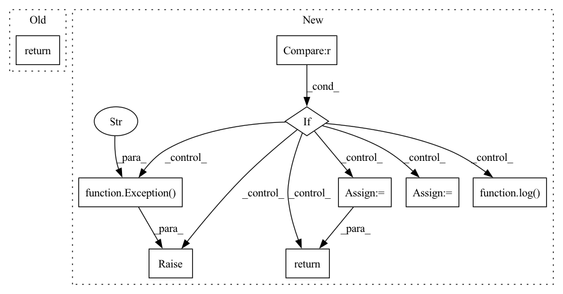

Pattern ID :3137

Before Change
.
// pylint: disable=no-self-use,unused-argument
// [...] call DriverAPI
return GetClientsResponse(client_ids=list(range(5)))
def create_tasks(self, req: CreateTasksRequest) -> CreateTasksResponse:
.
After Change
def get_clients(self, req: GetClientsRequest) -> GetClientsResponse:
Get client ID"s.
if self.stub is None:
log(ERROR, ERROR_MESSAGE_DRIVER_NOT_CONNECTED)
raise Exception("`Driver` instance not connected")
req_proto = serde.get_clients_request_to_proto(req)
res: driver_pb2.GetClientsResponse = self.stub.GetClients(request=req_proto)
return serde.get_clients_response_from_proto(res)
def create_tasks(self, req: CreateTasksRequest) -> CreateTasksResponse:
.
In pattern: SUPERPATTERN
Frequency: 3
Non-data size: 9
Instances
Fragment ID: 11988198
Project Name: adap/flower
Commit Name: 281b8d002831c8c6f79f011fa061ee2f902230e8
Time: 2022-10-06
Author: daniel@adap.com
File Name: src/py/flwr/driver/driver.py
M Class Name: Driver
N Class Name: Driver
M Method Name: get_clients(2)
N Method Name: get_clients(2)
M Parent Class:
N Parent Class:
M File Name: src/py/flwr/driver/driver.py
N File Name: src/py/flwr/driver/driver.py
M Start Line: 81
M End Line: 81
N Start Line: 87
N End Line: 93
'>
Before Change
// pylint: disable=no-self-use
// [...] call DriverAPI
num_tasks: int = sum([len(ta.client_ids) for ta in req.task_assignments])
return CreateTasksResponse(task_ids=list(range(num_tasks)))
def get_results(self, req: GetResultsRequest) -> GetResultsResponse:
.
After Change
def create_tasks(self, req: CreateTasksRequest) -> CreateTasksResponse:
Schedule tasks.
if self.stub is None:
log(ERROR, ERROR_MESSAGE_DRIVER_NOT_CONNECTED)
raise Exception("`Driver` instance not connected")
// Serialize, call Driver API, deserialize
req_proto = serde.create_tasks_request_to_proto(req)
res_proto: driver_pb2.CreateTasksResponse = self.stub.CreateTasks(
request=req_proto
)
return serde.create_tasks_response_from_proto(res_proto)
def get_results(self, req: GetResultsRequest) -> GetResultsResponse:
Get task results.
'>
Fragment ID: 11988199
Project Name: adap/flower
Commit Name: 881de8678a9deeec5a61ac5833f75eda4f4d086b
Time: 2022-10-25
Author: daniel@adap.com
File Name: src/py/flwr/driver/driver.py
M Class Name: Driver
N Class Name: Driver
M Method Name: create_tasks(2)
N Method Name: create_tasks(2)
M Parent Class:
N Parent Class:
M File Name: src/py/flwr/driver/driver.py
N File Name: src/py/flwr/driver/driver.py
M Start Line: 99
M End Line: 100
N Start Line: 98
N End Line: 107
'>
Before Change
.
// pylint: disable=no-self-use
// [...] call DriverAPI
return GetResultsResponse(
results=[
Result(task_id=task_id, legacy_client_message=ClientMessage())
for task_id in req.task_ids
After Change
def get_results(self, req: GetResultsRequest) -> GetResultsResponse:
Get task results.
if self.stub is None:
log(ERROR, ERROR_MESSAGE_DRIVER_NOT_CONNECTED)
raise Exception("`Driver` instance not connected")
// Serialize, call Driver API, deserialize
req_proto = serde.get_results_request_to_proto(req)
res_proto: driver_pb2.GetResultsResponse = self.stub.GetResults(
request=req_proto
)
return serde.get_results_response_from_proto(res_proto)
'>
Fragment ID: 11988197
Project Name: adap/flower
Commit Name: 881de8678a9deeec5a61ac5833f75eda4f4d086b
Time: 2022-10-25
Author: daniel@adap.com
File Name: src/py/flwr/driver/driver.py
M Class Name: Driver
N Class Name: Driver
M Method Name: get_results(2)
N Method Name: get_results(2)
M Parent Class:
N Parent Class:
M File Name: src/py/flwr/driver/driver.py
N File Name: src/py/flwr/driver/driver.py
M Start Line: 106
M End Line: 111
N Start Line: 111
N End Line: 120